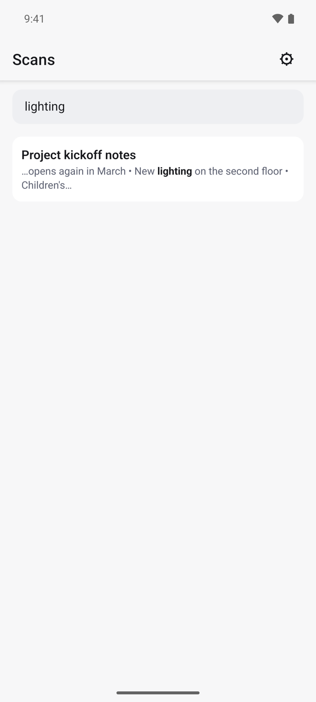

यह क्या करता है
OCRScanner कागज़ के पन्ने की फ़ोटो लेता है, उसे सीधा करता है और आपके फ़ोन पर ही टेक्स्ट पढ़ लेता है। आप टेक्स्ट एडिट और कॉपी कर सकते हैं, अपने सभी स्कैन में खोज सकते हैं, और स्कैन को खोजने योग्य PDF, टेक्स्ट फ़ाइल या इमेज के रूप में शेयर कर सकते हैं।
- टेक्स्ट पहचान आपके फ़ोन पर चलती है और बिना इंटरनेट के काम करती है।
- कोई अकाउंट नहीं। आपके स्कैन फ़ोन में ही रहते हैं और कभी अपलोड नहीं होते।
- PDF इम्पोर्ट करें, या Android पर दूसरे ऐप से इमेज शेयर करें।
- विज्ञापनों के साथ मुफ़्त। एक बार की Premium ख़रीद विज्ञापन हटाती है और और भाषाएँ जोड़ती है।
शुरू करें
- OCRScanner खोलें। पहली बार Scans सूची खाली होती है।
- कैमरे के लिए Scan दबाएँ, या अपनी पहले से ली हुई फ़ोटो चुनने के लिए Import दबाएँ।
- Android कैमरे की अनुमति माँगे तो अनुमति दें। Import के लिए आपकी पूरी फ़ोटो लाइब्रेरी की अनुमति नहीं चाहिए।

पन्ना स्कैन करें
- Scan दबाएँ और कैमरा पन्ने की ओर करें। फ़ोटो लेने के लिए शटर बटन दबाएँ।
- Review पर पन्ने के किनारे अपने आप मिल जाते हैं। कोई किनारा ग़लत हो तो नीले कोने को खींचकर ठीक करें, या पूरी फ़ोटो रखने के लिए Full page दबाएँ।
- पन्ने को साफ़ करने के लिए फ़िल्टर चुनें: Original, Magic, Gray या B&W।
- पन्ना आड़ा हो तो Rotate 90° दबाएँ, या दोबारा फ़ोटो लेने के लिए Retake दबाएँ।
- Recognize text दबाएँ।

एक दस्तावेज़ में कई पन्ने स्कैन करने के लिए, बाद में स्कैन खोलें, ⋯ दबाएँ और Add pages चुनें।
PDF इम्पोर्ट करें
OCRScanner एक PDF के 20 पन्ने तक पढ़ता है, Premium के साथ 50 तक। हर पन्ना इमेज की तरह पढ़ा जाता है, इसलिए PDF के अंदर पहले से मौजूद टेक्स्ट इस्तेमाल नहीं होता।
- अपने फ़ोन के फ़ाइल चुनने वाले हिस्से में एक PDF चुनें। स्टोरेज की अनुमति नहीं चाहिए।
- Review पर पन्ने जाँचें। PDF सीमा से लंबा हो तो Review बताता है कि कितने पन्ने छोड़े गए।
- Recognize text दबाएँ।
दूसरे ऐप से इमेज शेयर करें
यह Android पर काम करता है।
- गैलरी या किसी दूसरे ऐप में 20 तक इमेज चुनें और शेयर दबाएँ।
- OCRScanner चुनें।
- App lock चालू हो तो ऐप अनलॉक करें। इमेज नए स्कैन के रूप में Review पर खुलती हैं।
अगर आपके पास बिना सहेजे पन्ने खुले हैं, तो उन्हें बदलने से पहले ऐप पूछता है।
टेक्स्ट पढ़ें, एडिट करें और कॉपी करें
- पहचान के बाद Result में ऊपर पन्ना और नीचे उसका टेक्स्ट दिखता है।
- पन्ने पर कोई पंक्ति कहाँ है, यह देखने के लिए टेक्स्ट की पंक्ति दबाएँ। उसकी पंक्ति पर जाने के लिए पन्ने पर कोई शब्द दबाएँ।
- जिन पंक्तियों पर ऐप को भरोसा नहीं होता, वे हाइलाइट होती हैं, ताकि आप जान सकें कि क्या जाँचना है।
- टेक्स्ट सुधारने के लिए Edit, कॉपी करने के लिए Copy, और भेजने के लिए Share दबाएँ।
- स्कैन को अपनी सूची में रखने के लिए Save दबाएँ।

टेक्स्ट से स्कैन खोजें
- Scans पर Search text in your scans दबाएँ।
- कोई शब्द लिखें। जिन स्कैन में वह शब्द है, वे सब सूची में आ जाते हैं और मिलान बोल्ड में दिखता है।
- उस मिलान पर स्कैन खोलने के लिए किसी नतीजे को दबाएँ।

किसी एक टैग वाले स्कैन ही देखने के लिए खोज वाले बॉक्स के नीचे वह टैग दबाएँ। तब खोज सिर्फ़ उन्हीं स्कैन के अंदर होती है। सभी स्कैन देखने के लिए टैग को फिर से दबाएँ।
शेयर या एक्सपोर्ट करें
- कोई स्कैन खोलें और शेयर बटन दबाएँ।
- फ़ॉर्मैट चुनें:
- PDF: पन्नों की इमेज, जिनके पीछे खोजने योग्य टेक्स्ट होता है।
- Text file: सादा टेक्स्ट (.txt)।
- Page image: Photos में सहेजें या भेजें।
- जिस ऐप में भेजना है, उसे चुनें।

नाम बदलें, टैग लगाएँ और हटाएँ
- कोई स्कैन खोलें और ⋯ दबाएँ।
- शीर्षक बदलने के लिए Rename चुनें, या कॉमा से अलग करके टैग जोड़ने के लिए Edit tags चुनें।
- पन्नों को किसी दूसरी टेक्स्ट भाषा में दोबारा पढ़ने के लिए Recognize text again चुनें। आपका एडिट किया हुआ टेक्स्ट बदल जाएगा।
- स्कैन को अपने फ़ोन से हटाने के लिए Delete scan चुनें।
स्कैन का बैकअप लें और रीस्टोर करें
- Scans पर ऊपर दाईं ओर सेटिंग आइकन दबाएँ।
- Storage में Back up scans दबाएँ। आपके सभी स्कैन एक फ़ाइल में पैक हो जाते हैं।
- फ़ाइल को कहाँ सहेजना या भेजना है, यह चुनें। फ़ाइल एन्क्रिप्टेड नहीं है, इसलिए उसे सुरक्षित जगह रखें।
- नए फ़ोन पर Restore from backup दबाएँ और फ़ाइल चुनें। फ़ोन के सभी स्कैन को बैकअप वाले स्कैन से बदलने से पहले ऐप पूछता है।
ऐप लॉक करें और सेटिंग बदलें
- Scans पर ऊपर दाईं ओर सेटिंग आइकन दबाएँ।
- स्कैन खुलने से पहले फ़िंगरप्रिंट, चेहरा या स्क्रीन लॉक माँगने के लिए App lock चालू करें।
- Text language (OCR) में अपने दस्तावेज़ों की लिपि चुनें। Latin में अंग्रेज़ी, स्पेनिश, फ़्रेंच, जर्मन, इंडोनेशियाई और अन्य शामिल हैं। ऐप वही लिपि सुझाता है जो आपके फ़ोन की भाषा में इस्तेमाल होती है।
- ऐप को फ़ोन से अलग भाषा में चलाने के लिए App language दबाएँ।
- Image quality (Balanced या Full) और Theme (System, Light या Dark) चुनें।

Premium
Premium एक बार का भुगतान है, सब्सक्रिप्शन नहीं। Settings खोलें और See Premium दबाएँ। इससे आपको मिलता है:
- कोई विज्ञापन नहीं।
- चीनी, जापानी और कोरियाई टेक्स्ट, और Android पर हिंदी व अन्य देवनागरी टेक्स्ट।
- कई स्कैन को एक PDF या टेक्स्ट फ़ाइल में मिलाना।
- लंबे PDF इम्पोर्ट करना: 20 के बजाय 50 पन्ने तक।
अगर आपने पहले Premium ख़रीदा है, तो Premium स्क्रीन पर Restore purchase दबाएँ।
सवाल
क्या यह ऑफ़लाइन काम करता है? हाँ। स्कैन, टेक्स्ट पहचान, खोज और एक्सपोर्ट सब आपके फ़ोन पर चलते हैं।
मेरे स्कैन कहाँ रहते हैं? सिर्फ़ आपके डिवाइस पर। ऐप अनइंस्टॉल करने पर स्कैन भी हट जाते हैं, इसलिए उन्हें रखने के लिए पहले Settings में Back up scans दबाएँ।
टेक्स्ट में ग़लतियाँ हैं। मैं क्या करूँ? अच्छी रोशनी में पन्ने को सपाट रखकर फ़ोटो दोबारा लें, Magic या B&W फ़िल्टर आज़माएँ, और जाँचें कि Text language (OCR) दस्तावेज़ की लिपि से मेल खाती है। अलग-अलग शब्द Edit से भी ठीक कर सकते हैं।
क्या यह हाथ की लिखावट पढ़ सकता है? यह छपे हुए टेक्स्ट के लिए बना है। हाथ की लिखावट अक्सर ग़लत पढ़ी जाती है।
गोपनीयता
आपके दस्तावेज़ कभी अपलोड नहीं होते। मुफ़्त संस्करण में Google AdMob के विज्ञापन दिखते हैं। पूरी गोपनीयता नीति पढ़ें।